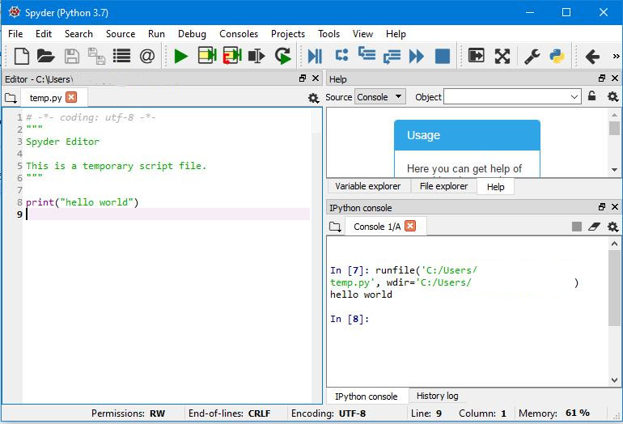

So, let's begin. Open up your Python editor. If you've installed Anaconda, the best one to open is Spyder. You should see something like this:
On the left is the code editor - you can see we've written some code in there. On the lower right is the console - this is where the program will write stuff or where error messages will appear - in this case, the program has run successfully and printed (written to the screen) "hello world". The green triangular button runs the code.
Let's build some code. First, delete your version of the code below (it doesn't do anything we need to worry about yet):
# -*- coding: utf-8 -*-
"""
Created on Wed May 20 14:20:40 2024
@author: Alice
"""
Then write the following in the code editor:
print("hello world")
and press the run button.
The words "hello world" should appear in the console, as in the picture above.
If it hasn't worked, we'll look at why in a second. In the meantime, move on to the next page:
[Home > Part 1 > Next]